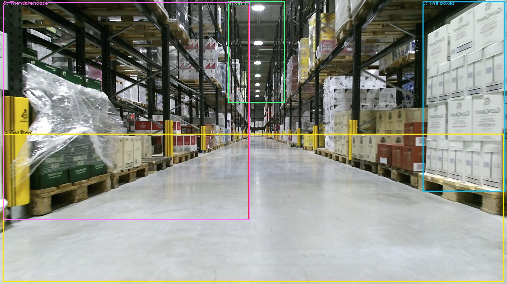

The image shows a large warehouse with a long, narrow aisle. The aisle is lined with rows of shelves on both sides, each filled with boxes and pallets. The boxes are of different sizes and colors, and some are wrapped in plastic. The floor is made of concrete, and the ceiling is high with recessed lighting. The warehouse appears to be well-maintained and well-organized.

Original · Caption raw · Grounding raw · Koordinate
Številke so lokalni ID regije. Dolge slikovne oznake so skrajšane; spodaj so celotne fraze. Napovedane regije se lahko prekrivajo ali opisujejo skupine.
| ID | Celotna fraza | bbox xyxy |
|---|---|---|
| 1 | The aisle | [12.479999542236328, 7.020000457763672, 943.6799926757812, 836.4600219726562] |
| 2 | The boxes | [1600.3199462890625, 5.940000057220459, 1913.2799072265625, 728.4600219726562] |
| 3 | The floor | [10.559999465942383, 508.1400146484375, 1907.5198974609375, 1071.9000244140625] |
| 4 | ceiling | [864.9599609375, 4.860000133514404, 1078.0799560546875, 391.5000305175781] |
| 5 | The warehouse | [12.479999542236328, 7.020000457763672, 945.5999755859375, 836.4600219726562] |